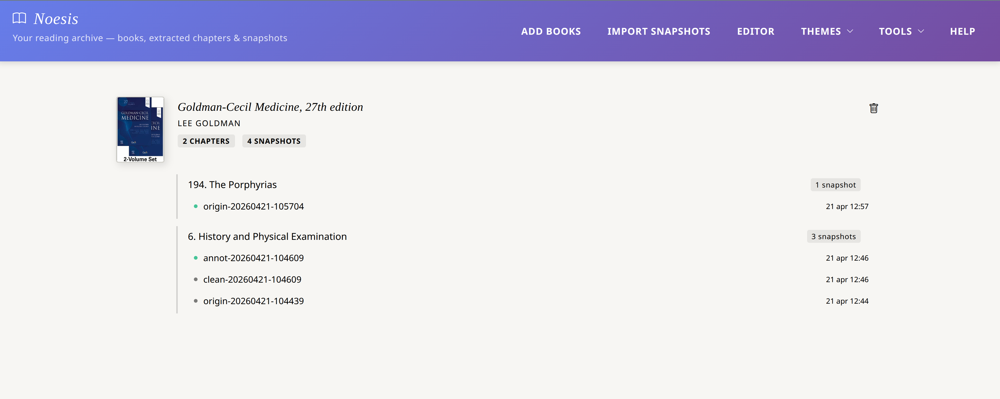

Local versioning for your notes
The problem: when working on an extracted chapter — adding highlights, notes and chunks — you cannot revert to a previous version. A wrong action is irreversible. The Snapshot system solves this.
Extract chapter
Chapter opens in a new tab with a unique ID
Study
Highlights, annotations, collect chunks
Save snapshot
Frozen version with description
Photograph your work
Snapshots are created directly from Noesis Editor, not from the Library. When working on an extracted chapter, you can save a version at any time with one click.
Open the chapter in the Editor
From the Library, click on the chapter name (opens the latest snapshot) or on a specific snapshot. The Editor opens in a new tab.
Click the Save button in the Chapter toolbar
The green Save button (bi-file-earmark-arrow-down) in the lower Chapter toolbar section. A prompt shows the proposed filename.
Optional: add a label
The prompt lets you add a custom label to the filename. Examples: "firstRead", "afterChunks", "finalVersion". Leave empty to use timestamp only.
Confirm to save
Noesis produces two HTML files simultaneously: clean version (without highlight colours) and annotated version (with all colours). Both are downloaded and also saved in IndexedDB. A confirmation toast appears.
Manage the history from the Library
Snapshot history is managed from the Library, not the Editor. Each extracted chapter shows the list of saved snapshots. From here you can load or delete any version.

Load a snapshot
Click Load next to a snapshot to restore that version in the editor. The current content is replaced. Save a snapshot before loading if you want to keep the current version.
Delete a snapshot
Click the red delete button to remove a snapshot from IndexedDB. The HTML file on the filesystem is not deleted — it remains available for future reimport.
Access snapshots from the library
The hierarchical library (v810) shows all extracted chapters with their snapshots. From here you can open any version in the Editor, but snapshots are created from the Editor (see previous section). The Library is used to navigate and manage saved versions.
Click on the cover
Opens the book in the reader. Navigate normally and extract new chapters.
Click on the chapter name
Opens Noesis Editor with the most recent snapshot. Quick access to the latest version of your work.
Click on the snapshot name
Opens Noesis Editor with that specific snapshot. Direct access to any historical version.
The noesisDB structure
The noesisDB database (IndexedDB) stores only lightweight metadata — the HTML content of snapshots lives on the filesystem.
Real HTML files
Each snapshot is a standalone HTML file — visible in the filesystem, portable, archivable in Git or cloud storage of the user's choice.
Manual versioning
The user explicitly controls when to save. There is no auto-save for snapshots — only the work you choose to photograph is preserved.
Reimportation
Snapshot files can be reimported at any time via Import Snapshots in the Library — Noesis recognises them via noesis-* meta tags.
Filesystem cleanup
Manage snapshots like normal files: rename them, move them, archive old ones. No database to clear.